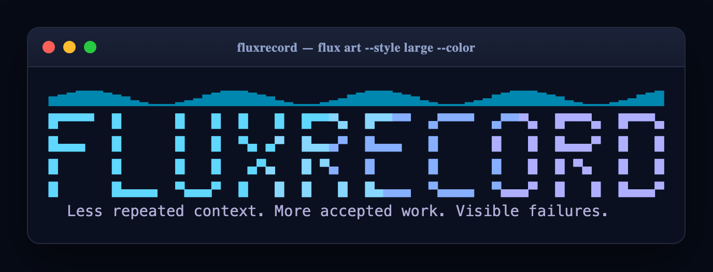

Ownership that expires.
A ticket is claimed with a lease. When the lease runs out the work is reconciled, not silently stolen.
A ticket standard for local-first coordination
fluxrecord is a ticket standard for local-first, evidence-driven coordination — built for people working across AI coding agents, CLIs, and terminal sessions.

flux art. One idea in five styles, with an optional ANSI gradient that honours NO_COLOR.01 / Quick start
Zero runtime dependencies. The ledger is a SQLite file you own.
# install pip install fluxrecord # create the ledger and the project layout flux init # add a ticket with its acceptance criteria flux task-add M-0001 \ --objective "Add intake validation" \ --acceptance "Bad intake returns exit 2 with a named reason" \ --scope src/intake.py # claim it, then record what you actually did flux start M-0001 --owner agent-alpha flux checkpoint <session> \ --summary "Added intake validation" \ --evidence tests/test_intake.py \ --next "wire it into the CLI" \ --tokens 1200
02 / What it does
The ledger separates a finished session from accepted work.
A ticket is claimed with a lease. When the lease runs out the work is reconciled, not silently stolen.
Every checkpoint carries a summary, the evidence that backs it, the next step, and the tokens it cost.
Markdown tickets with front matter, an index, and one evidence file per checkpoint — the layout the specification describes.
Durable observations and an idempotent outbox, so a public summary is never sent twice and never sent blind.